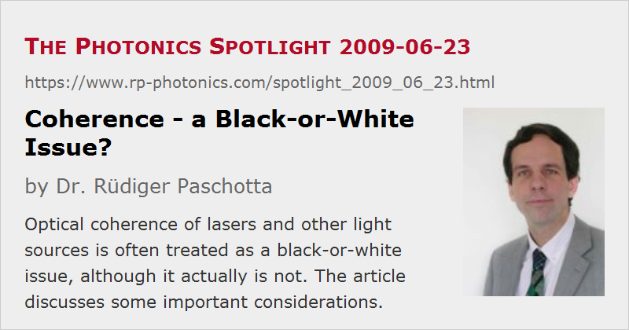

Coherence – a Black-or-White Issue?
Posted on 2009-06-23 as a part of the Photonics Spotlight (available as e-mail newsletter!)
Permanent link: https://www.rp-photonics.com/spotlight_2009_06_23.html
Author: Dr. Rüdiger Paschotta, RP Photonics Consulting GmbH
Abstract: Optical coherence of lasers and other light sources is often treated as a black-or-white issue, although it actually is not. The article discusses some important considerations.
Ref.: encyclopedia article on coherence; The Photonics Spotlight 2006-09-22

Lasers are often said to be special light sources because they emit coherent light, whereas other light sources are incoherent. However, is this really a “black and white” issue?
Beginning with spatial coherence, there can really be gradual differences. Many lasers exhibit nearly the highest possible degree of spatial coherence, which would imply perfectly well-defined wavefronts of the output. Others exhibit a substantially reduced degree of spatial coherence, which is associated with a reduced beam quality. Compared with some really “incoherent” light source such as an incandescent lamp, the spatial coherence is still very high – sufficient to form a well directed laser beam, even if its focusability is not as high as for some other laser beams. That big difference in the degree of coherence between even poor lasers and other light sources justifies the practice of calling lasers coherent light sources, in contrast to incoherent sources like bulbs.
Concerning temporal coherence, the situation is somewhat more complicated. Some very carefully stabilized single-frequency lasers, used as optical frequency standards in frequency metrology, exhibit an extremely high temporal coherence, associated with a linewidth below 1 Hz (to be compared with the mean frequency of hundreds of terahertz). Most other lasers have a temporal coherence which is lower by many orders of magnitude. The largest optical bandwidth is reached by some few-cycle mode-locked titanium–sapphire lasers (see also: ultrafast lasers), emitting octave-spanning spectra. Looking at this huge bandwidth, one might believe that such lasers have an extremely low level of temporal coherence – comparable with that of a light bulb. This, however, is not true; the issue has been discussed in an earlier Spotlight article. Essentially, one has to consider that the spectrum (viewed with sufficiently high spectral resolution) forms a frequency comb, consisting of very narrow equidistant lines. So we see not only that lasers exhibit very different levels of temporal coherence, but also that one misses essential aspects when trying to quantify the temporal coherence with a single number such as a coherence length or optical bandwidth.
As a final remark, optical processes and certain techniques are called coherent or incoherent, depending on whether they are sensitive to (relative) optical phases. This is really a black-and-white issue. For example, coherent beam combining works only with interferometric stability of mutual phase relations, whereas spectral beam combining is not sensitive to such phases, as it exploits differences in optical frequency.
This article is a posting of the Photonics Spotlight, authored by Dr. Rüdiger Paschotta. You may link to this page and cite it, because its location is permanent. See also the RP Photonics Encyclopedia.
Note that you can also receive the articles in the form of a newsletter or with an RSS feed.
Questions and Comments from Users
Here you can submit questions and comments. As far as they get accepted by the author, they will appear above this paragraph together with the author’s answer. The author will decide on acceptance based on certain criteria. Essentially, the issue must be of sufficiently broad interest.
Please do not enter personal data here; we would otherwise delete it soon. (See also our privacy declaration.) If you wish to receive personal feedback or consultancy from the author, please contact him e.g. via e-mail.
By submitting the information, you give your consent to the potential publication of your inputs on our website according to our rules. (If you later retract your consent, we will delete those inputs.) As your inputs are first reviewed by the author, they may be published with some delay.
|  |
If you like this page, please share the link with your friends and colleagues, e.g. via social media:
These sharing buttons are implemented in a privacy-friendly way!